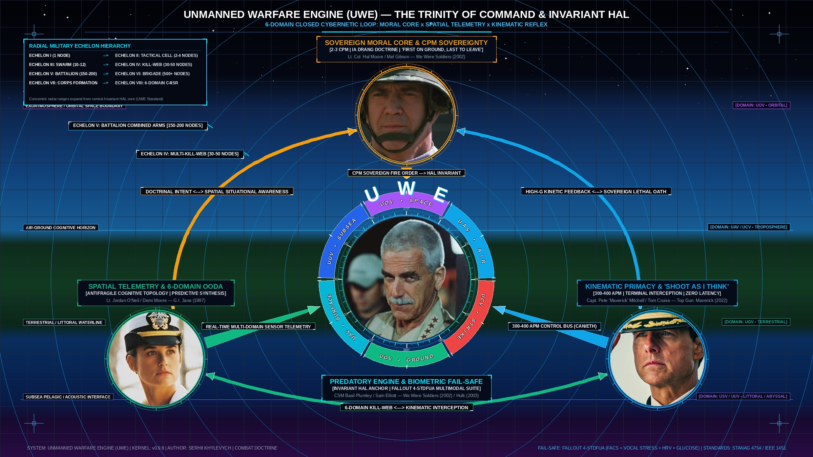
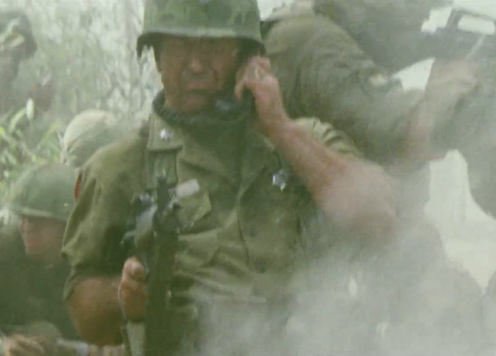
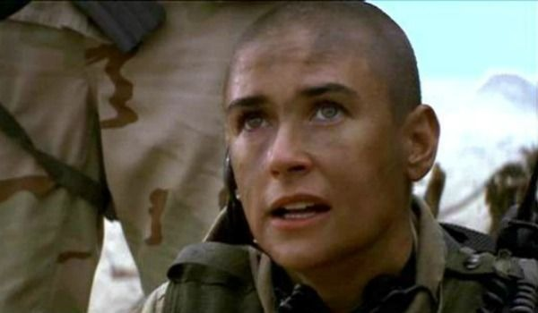
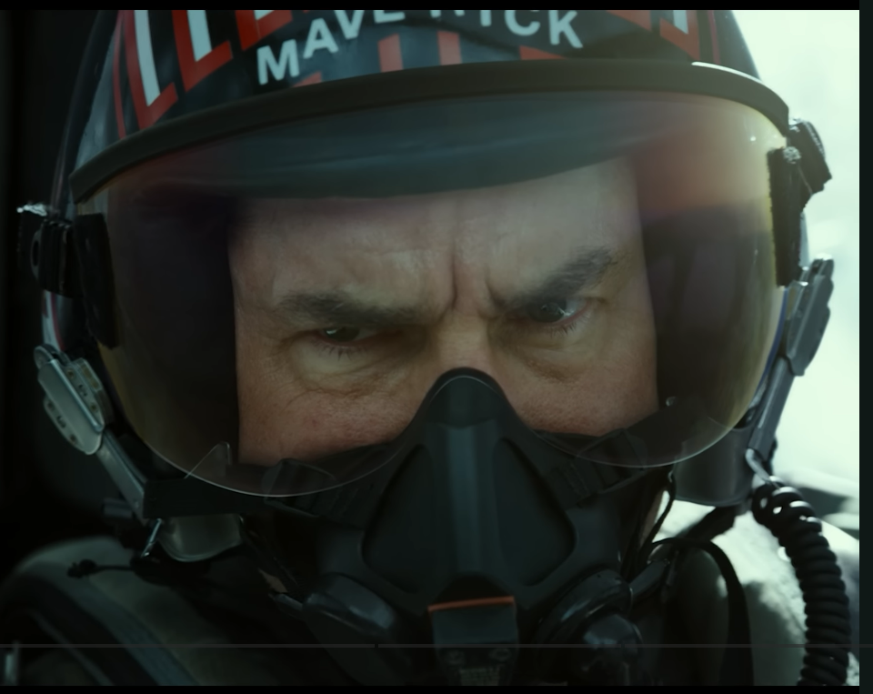

Beyond "Twitch-Reflexes": The Moore-Plumley Paradigm, APM vs. CPM Discrimination, and the "I Shoot As I Think" Doctrine

Figure 1: Master Title Infographic Cover (2400×1350) — The Command Trinity (Hal Moore, Jordan O'Neil, Pete Maverick) orbiting the Invariant HAL Anchor (CSM Basil Plumley) across the 6-Domain Saturated Gauge.
This architectural model was forged in Kyiv amidst the existential realities of multi-domain asymmetric warfare. The cognitive framework detailed here would have been impossible without the profound inspiration of legendary actors and the dialogue of international peers.
We extend our deepest gratitude for the extraordinary motivation, character archetypes, and cultural grounding provided by:
The archetype of the unyielding, predatory Master Sergeant. His legendary "Old Iron Jaw" calm under artillery fire provided the behavioral baseline for the UWE Engine itself — a tireless, incorruptible cyber-physical executor maintaining logistical and tactical order across battlefield friction. (Sam Elliott IMDb)
The personification of the sovereign moral core, battlefield empathy, and the sacred military oath ("First on the ground, last to leave"). His leadership model underpins our doctrine of CPM Sovereignty, guaranteeing that while machines optimize kinematics, only a human commander carries the moral and legal weight of lethal authority. (Mel Gibson IMDb)
The ultimate benchmark for high-bandwidth spatial scanning, predictive synchronization, and unyielding fortitude. Her coastal extraction planning demonstrated the compressed OODA loop required of an officer managing multi-domain Kill Webs, rescuing the system when automation fractures under stress. (Demi Moore Instagram / IMDb)
The benchmark for non-linear crisis adaptation, testing kinematic boundaries (UWE Law I), and shattering bureaucratic dogma through physical execution. His 9G flight test provided the foundation for our core tactical creed: "I Shoot As I Think." (Tom Cruise Profile)
Systems strategist and international technology leader. Without his continuous analytical support, rigorous sounding-board evaluations, and deep perspective on autonomous systems integration, this cross-domain human-cybernetic synthesis would have remained incomplete. His engagement exemplifies the international coalition of forward-thinking minds building the automated shield for the Free World.
In classical land warfare, command revolves around directing human bodies. In UWE, command shifts to orchestrating high-density cyber-physical fleets across six operating domains: Space (UOV), Air (UAV), Copter (UCV), Ground (UGV), Surface (USV), and Subsea (UUV).
This operational paradigm directly mirrors Naval Fleet Operations (ВМФ): autonomous robotic fleets operate with high technological density per unit, navigate hostile physical fluids, and execute coordinated strikes under strict electronic silence (EMCON). Command authority scales across three maritime tiers:
Command Unit: Single heavy platform (SL-PA-MO, GL-EB-DW) or tactical cluster.
Operational Scope: Total autonomy under electronic blackout. The officer functions as a ship captain: managing hull damage, local power budgets, and executing terminal strikes without waiting for satellite pings.
Command Unit: Multi-asset strike groups (Air-Surface-Subsea).
Operational Scope: Dynamic Kill Web allocation and rapid intermodal deployment (C0-C2 Containerization) from off-road beach trailers before adversary counter-battery locks on.
Command Unit: Entire 6-domain theater containment shield.
Operational Scope: Full theater orchestration, balancing the Cost-Exchange Ratio (attrition calculus), and integrating open-architecture APIs to out-scale adversary industrial output.
The primary anxiety of military commanders regarding AI is the "loss of control" — the fear of opaque algorithms usurping command or executing unauthorized escalations.
UWE resolves this by adopting the historical command dynamic of Lt. Col. Hal Moore and CSM Basil Plumley (Battle of Ia Drang, 1965):
Holds the "Why" and "What" — strategic intent, ethical stewardship, sovereign authority under the Law of Armed Conflict, and cryptographic lethal release.
Holds the "How" — tireless discipline, terramechanics, aerodynamic drag solving, logistical containerization, and microsecond Kill Web routing.
Military leaders rightly fear the "twitch-panic" scenario — the fear that an overstimulated operator will panic-click and trigger an unintended kinetic escalation. UWE neutralizes this through a strict architectural separation:
Function: Spatial maneuvering, sensory orientation, EW frequency hopping, re-grouping orders, and platform survival.
Mechanism: Fluid muscle memory, hotkeys, and precision manipulator inputs.
Function: Legally binding lethal authorization and strategic state shifts (OWM activation).
Mechanism: Deliberate, conscious execution signed via individual cryptographic tokens (STANAG 4754 / ED25519).
This standard mirrors a fighter pilot carrying tactical nuclear munitions: possessing superhuman subconscious motor control at 9G, paired with icy moral clarity regarding the weapon release switch. Pure esports gamers fail as combat commanders because tournaments occur in risk-free environments where defeat is merely a lost match; under kinetic artillery fire, unconditioned psychology fractures. In UWE doctrine, gamers serve strictly as Technical Instructors for ARM-SRM Simulators to drill muscle memory, while the combat seat is held exclusively by a commissioned officer bound by military oath.
The transition from command intent to kinetic execution requires an indivisible three-stage Cyber-Physical Reflex Loop:
Futuristic concepts often push gesture control or eye-tracking. In high-intensity combat, UWE rejects these gimmicks in favor of precision mechanical manipulators (mouse or trackball) for two definitive reasons:
Drawing on the real-time cybernetic feedback loops proven in the author's technical project Fallout 4-STDFUA, UWE implements an automated multimodal biometric fail-safe:
In the microsecond domain of Dagger Dogfights where closing speeds reach km/s and EW pulses blind standard radios, linear decision cycles are fatal: "Shoot, then think" leads to fratricide; "Think, then shoot" leads to destruction via adversary Edge-AI translation latency. The UWE Officer operates under the creed: "I Shoot As I Think" (Стріляю, як думаю).

Figure 2: The Physical Embodiment of "I Shoot As I Think" — Lt. Col. Hal Moore in the Ia Drang firefight. Handset to ear coordinating sovereign multi-domain fires (CPM), while his rifle simultaneously engages charging assault waves (APM). Zero translation latency between thought, command, and kinetic delivery.
The climax on the hostile coast in G.I. Jane anchors Lt. Jordan O'Neil in our human triad orbiting the Plumley Anchor (UWE Engine):

Figure 3: Lt. Jordan O'Neil on the Coastline — Shaved head, grime, comms headset active. Cold calculation under mortal stress: emotional responses cut, functioning as a pure tactical processor rescuing the system when automation fractures.
Here on the coast her character is fully forged. Emotional noise is severed: her mind operates as a pure tactical processor, evaluating terrain vectors and hostile firing positions with algorithmic detachment.
Her gaze on the collage, directed toward Master Sergeant UWE, represents absolute tactical synchronization. She does not ask the machine for advice; she commands at the speed UWE links orbital satellites (UOV) and strike drones (UCV) into a unified Kill Web.
Her mission on that coast is the rescue of Master Chief. In UWE doctrine, this carries vital architectural meaning: a human with this mindset saves the cyber-physical system itself when automation (the AI Sergeant) is damaged, blinded by EW strikes, or trapped in an algorithmic deadlock.
This episode provides the definitive proof: a UWE Fleet Officer forged with Jane's character never fractures before supercritical challenges on the real-world battlefield.
Neither Maverick, Moore, nor O'Neil is a ready-made UWE Officer. What unites them is acceptance of the physical reality of combat (Law I) and non-linear decision-making. The UWE Officer is an engineered psychological alloy:
Absolute fidelity to the military oath, ethical command, and human stewardship. The officer never views robotic fleets as a video game; they carry sovereign accountability under the Law of Armed Conflict, holding the cryptographic key that authorizes lethal force.
Compressed situational awareness and total elimination of panic under extreme stress. Reads compressed 6-character tokens across 6 operating domains simultaneously, anticipating edge-AI maneuvers before network bottlenecks register.
Rejection of administrative dogma in favor of immutable physical laws. In high-G crises (Dagger Dogfights), pushes platforms to structural limits, overriding peacetime limiters because they know the metal will hold.
In autonomous warfare, tactical failure stems from peacetime doctrinal dogma — believing that simulation boundaries and safety interlocks represent the absolute limit of the physical platform. Maverick demonstrates the core tenet of UWE Law I (Kinematic Primacy): when the mission hangs in the balance, physical dynamics take absolute precedence over bureaucratic constraints.

Figure 4: Capt. Pete "Maverick" Mitchell at 9G in Dagger Dogfight — Soft tissue deformed under massive kinematic pressure, executing supercritical maneuvers outside peacetime NATO doctrine. Proving that when physical metal holds, human cognitive and motor will pushes autonomous interceptors to the theoretical edge of the aerodynamic envelope.
Standard flight computers enforce conservative G-limiters to preserve airframe service life. In Dagger Dogfights where adversary loitering munitions and interceptors close at supersonic speeds, the UWE Officer overrides peacetime envelopes, commanding 12G–15G terminal turns because the kinetic imperative demands victory.
Software cannot alter lift curves or energy dissipation. Maverick’s mindset roots autonomous C2 in pure physics: the pilot does not negotiate with the interface; they execute at the structural bleeding edge where fluid dynamics, wing loading, and thrust vectors meet.
These three human dimensions converge around the Plumley Anchor (UWE Engine): a tireless, objective master sergeant executing kinematics, containerization, and fail-safe supervision. The machine protects the human from physiological errors; the human infuses the machine with sovereign moral intent.
To communicate this architecture to defense leaders without triggering bureaucratic resistance, the visual series establishes an intentional cognitive progression across two distinct visual registers:
The cover image (Figure 1) presents the Command Trinity in Service Dress Uniforms, radiating constitutional legitimacy, tradition, and discipline:
As the reader transitions into the kinetic mechanics of autonomous warfare, the visual series pivots into raw, unadorned combat reality:
Every visual badge, vector, and arc on the master infographic corresponds to an exact cyber-physical subsystem:
[INVARIANT HAL ANCHOR | FALLOUT 4-STDFUA MULTIMODAL SUITE] — The machine executor managing the 44px pressure gauge dial across 6 saturated domains (UOV • SPACE, UAV • AIR, UCV • STRIKE, UGV • GROUND, USV • SURFACE, UUV • SUBSEA).
[2-3 CPM | IA DRANG DOCTRINE | 'FIRST ON GROUND, LAST TO LEAVE'] — Sovereign moral core and lethal authorization token holder.
[ANTIFRAGILE COGNITIVE TOPOLOGY | PREDICTIVE SYNTHESIS] — Spatial telemetry, extraction coordination, and multi-domain OODA loop.
[300-400 APM | TERMINAL INTERCEPTION | ZERO LATENCY] — Tactical motor reflex and supercritical vectoring under extreme physical stress.
DOCTRINAL INTENT <---> SPATIAL SITUATIONAL AWARENESS: Binds Moore's moral mandate to O'Neil's spatial telemetry.6-DOMAIN KILL-WEB <---> KINEMATIC INTERCEPTION: Binds O'Neil's predictive sensor synthesis to Maverick's interceptors.HIGH-G KINETIC FEEDBACK <---> SOVEREIGN LETHAL OATH: Feeds real-time kinetic results back into sovereign command.CPM SOVEREIGN FIRE ORDER ---> HAL INVARIANT: Cryptographic release of lethal authorization.UOV), Air-Ground Troposphere (UAV/UCV), Terrestrial/Littoral (UGV), Subsea Pelagic/Abyssal (USV/UUV).The Unmanned Warfare Engine (UWE) does not build robotic toys, nor does it displace human responsibility. It builds the software-defined shield that will protect the Free World from Scandinavian fjords to the Black Sea.
By combining tournament-grade mechanical APM with sovereign moral CPM, anchored by the Fallout 4-STDFUA real-time fail-safe and grounded in immutable physical laws, we forge an officer capable of winning the wars of tomorrow.
The Cyber-Physical Officer orchestrates across the full spectrum of UWE physical domains, empirical benchmarks, and HAL contracts:
Loyal Wingman collaborative combat aircraft validating the APM/CPM pilot handshake.
Case #01: Honda eVTOL GT-HEVPiecewise energy budget proving hover vs cruise power limits during transition.
Case #02: НРК SlimAk UGVArticulated ground chassis kinematics vs marketing myths of adaptive suspension.
Case #06: Exail DriX USVWave-piercing surface hull hydrodynamics and acoustic silent station-keeping.
Case #07: Ghost Shark XL-AUVAutonomous subsea sleeper fortress resting on the continental shelf awaiting C2 activation.
Explore the deterministic control contracts governing lift transition (IVtolTransitionDrive), articulated steering (IArticulatedChassis), and surface sea-keeping (ISurfacePlanner):
View Complete HAL Registry →